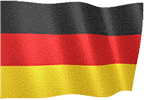
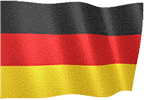
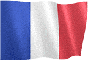
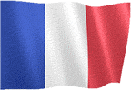

OYUN REHBERİ v3
Oyun rehberi dilini seçiniz.


 

 



GENEL OYNANIŞ
● Oyunun Amacı, kara harekatları yaparak veya gizli teşkilatı kullanarak tüm dünyayı fethetmektir.
● Oyun ekranında ekonomi, güvenlik ve ülke yönetimi ile ilgili seçenekleri kullanabilirsiniz.
● Bir sonraki güne geçmek için oyun ekranında sağ altta bulunan ok işaretini kullanmalısınız.
● Gün geçişlerinde tüm devletlere günlük gelir ve günlük nüfus eklenir.
● Gün tamamlandığında diğer devletler ülkenize teklifler yapabilir veya rastgele dünya olayları oluşabilir.
● Tekliflere ve durumlara vereceğiniz kararlar ekonominizi, nüfusunuzu ve diğer devletlerle olan ilişkilerinizi etkileyebilir.
EKONOMİ
● Ülkenizde yatırımlar yaparak para kazanabilirsiniz.
● Vergi oranı seçerek para kazanabilirsiniz.
● Bulunan maden kaynaklarını işleyerek para kazanabilirsiniz.
● İş adamlarınızı diğer ülkelere göndererek yatırımlar yapabilirsiniz.
● Kamu kurumlarından günlük gelir kazanırsınız.
● Fabrika ve Sanayi araştırmaları size ekstra gelir kazandırır.
● Ülkenize gelen her turistten ekstra para kazanırsınız.
● Krediler çekip ekonominize destek sağlayabilirsiniz.
● Ülkeleri fethederseniz tek seferlik büyük ödül kazanırsınız.
● %100 işgal ettiğiniz ülkelerin günlük gelirleri size eklenir.
● (İstatistikler - Fetih Gelirleri bölümünden kontrol edebilirsiniz.)
● Ülke Güvenliği bölümünden operasyonlar yaparak para kazanabilirsiniz.
● Diğer ülkelere siber saldırılar yaparak para kazanabilirsiniz.
● Milli Seferberlik ilan ederek para kazanabilirsiniz.
● Gizli Teşkilatınızı kullanarak para kazanabilirsiniz.
HAREKAT MERKEZİ
● Ülkeleri kara harekatları ile işgal edebilirsiniz.
● Kara harekatında başarılı olursanız işgal puanı kazanırsınız.
● İşgal puanı %100 olursa, ülke fethedilir.
● Hava harekatları ile düşman ülkesinin ordusunu zayıflatabilirsiniz.
● Diğer ülkelere siber saldırılar yapabilirsiniz.
● Konsolosluk binasını aktif ederek ekstra seçenekleri kullanabilirsiniz.
● Ülkelere casuslar yerleştirerek askeri, ekonomik ve detaylı raporlar alabilirsiniz.
● Savaşta olduğunuz ülkeler ile dostluk anlaşmaları yapabilirsiniz.
● Tüm saldırıları izinler uygun olduğunda yapabilirsiniz.
● Ülkelere ambargo uygulayabilirsiniz.
YERLİ ÜRETİM
● Üretim bölümünden istediğiniz ürünü üretebilirsiniz.
● Elinizdeki ürünleri satmak için ülkelere ticaret istekleri göndermelisiniz.
● Diğer ülkelerin satın almak istediği ürünlerde fiyat pazarlığı yapabilirsiniz.
● Sadece dost ülkeler sizden ürün satın almak ister.
● Elinizdeki ürün çeşitliliği ne kadar fazla ise ticaret yapma şansınız artacaktır.
● Diğer ülkeler ile ticaret ilişkilerinizi geliştirerek, aldığınız tekliflerin fiyatlarını yükseltebilirsiniz.
KİŞİSEL GÜVENLİK
● Savaşta olduğunuz ülkeler size suikastler yapabilir.
● Danışman Raporunu dikkate almalısınız.
● Suikastlerden korunmak için koruma düzeyi yüksek danışman görevlendirmelisiniz..
● Destek paketlerini de yükseltmeniz gerekmektedir.
GİZLİ TEŞKİLAT
● Gizli Teşkilat kurarak diğer ülkelerde isyanlar başlatabilirsiniz.
● Gizli Teşkilat ile suikastler yapabilirsiniz.
● Sadece eğitimli elemanları operasyonlarda kullanabilirsiniz.
● Eğitimli elemanlarınız ve silahlarınız operasyonel gücünüzü arttıracaktır.
MECLİS ve SEÇİMLER
● Seçimler her 365 günde bir yapılır.
● Seçimleri kazanabilmek için en yüksek oyu almalısınız.
● Yapılan seçimlerde başarılı olursanız, ekstra paralar kazanırsınız.
● Oy kazanmak için yasa çıkarın, miting yapın, para dağıtın, röportaj yapın.
● Seçimleri kaybederseniz 8 gün içerisinde askeri müdahale yapmanız gerekmektedir.
● Askeri müdahale başarısız olursa oyun biter.
(PREMIUM) KÜRESEL İTTİFAKLAR
● Kendi ittifağınızı kurabilirsiniz veya mevcut bulunan ittifaklara girebilirsiniz.
● Müttefik devletlerle toplantılar yapabilirsiniz.
● Müttefik devletlerin isteklerini tamamlayarak para kazanabilirsiniz.
● İttifak araştırmaları ekstra seçenekleri aktif hale getirir.
● İttifak üretimlerini kullanarak savunmanızı güçlendirebilirsiniz.
● Müttefik devletlerle ortak operasyonlar yapabilirsiniz.
● Aynı ittifaktaki üye devletlere saldırırsanız ittifaktan atılabilirsiniz.
(PREMIUM) BİRLEŞMİŞ MİLLETLER
● Birleşmiş milletleri kullanarak 5 farklı karar oylayabilirsiniz.
● Diğer ülkeler için finansal destek veya ekonomik yaptırım kararları alınabilir.
● Aktif kararlar bitene kadar yeni karar alınamaz.
● Sadece fethedilmeyen ülkeler kararlarda oy kullanır.
(PREMIUM) AĞIR SANAYİ
● Ağır sanayi ile 5 farklı özelleştirilmiş silah ve techizat üretilebilir.
● Sadece dost ve ticaret isteği bulunan ülkeler size ticaret isteği gönderebilir.
● Üretilen silahlar savaşlarda kullanılamaz.
KAZANMA ve KAYBETME
● Tüm ülkeleri %100 fethederseniz oyunu kazanırsınız.
● Paranız -20,000,000 dan az olursa oyun biter.
● Mutluluk 0 dan az olursa oyun biter.
HAKKINDA
● Eklenmesini istediğiniz içerikleri ve önerilerinizi bizimle paylaşabilirsiniz.
● Oyun içerisinde bulunan hakkında sayfasından mail ile bize ulaşabilirsiniz.
● Oyunumuza puan verirseniz seviniriz.
● iyi oyunlar.